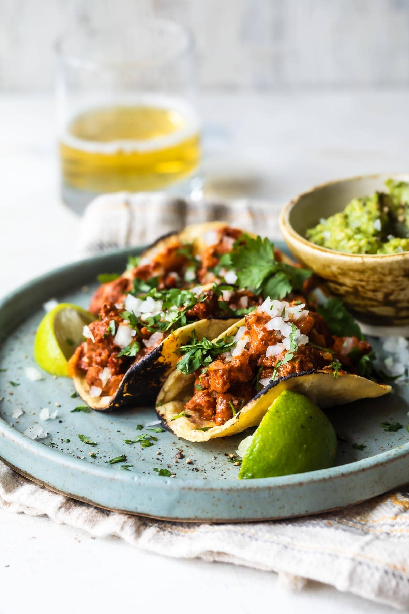

Al Pastor Taco Recipe

Tacos al Pastor, or Tacos “Shepherd’s style” is a classic Mexican recipe
most often confined to taco trucks and restaurants.
The ingredients are not intuitive and you probably don’t have them in your
pantry already, but they are easy to find online if you don’t have a
Mexican grocery store nearby.
Ingredients
- Boneless pork butt
- Lime
- Cilantro
- Vinegar
- Garlic
- Tortilla
- Salt & pepper
- Cumin
- Pineapple
- Achiote paste
- Guacamole
- Oil
Steps
- Marinade pork with dried chiles in boiling water for 10 minutes
-
Blend pineapple juice, vinegar, achiote paste, garlic, cumin, salt,
black pepper
-
Transfer blend from step 2 into ziploc bag and add marinated pork,
marinade for atleast 4 hours
- Heat olive oil and add pork and stir for 15-20 minutes
-
Season with salt then serve with warmed tortillas, onions, cilantro, and
guacamole